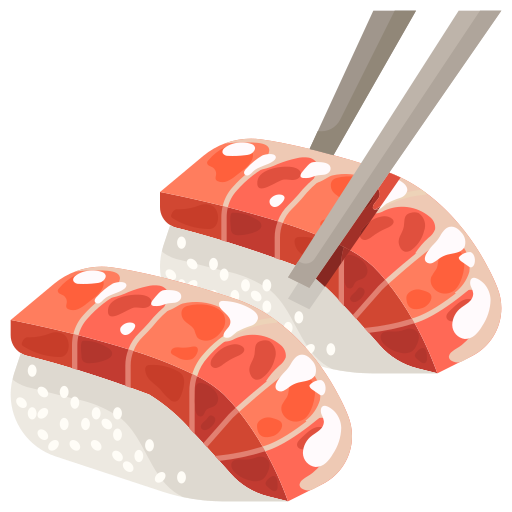
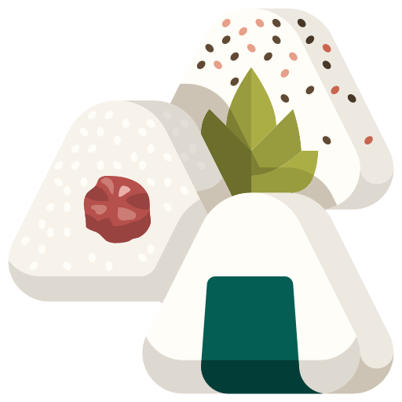
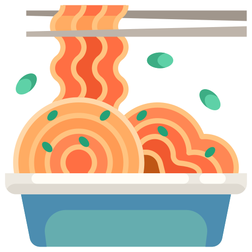

Chef's Specials
Ramen
A Japanese noodle dish consisting of a broth, meat, and vegetables.
Additional toppings such as sliced pork, nori, menma, eggs and
scallions could be added to the broth.
$10.00

Sushi
A Japanese dish crafted with a combination of raw fish, vegetables,
and rice. It is served with three condiments on the side - soy sauce,
a dollop of wasabi (a dry green paste), and gari (pickled ginger).
$15.00
Takotaki
A octopus-filled deep fried wheat batter balls, they are topped with
dried bonito flakes, dried seaweed flakes, and a special takoyaki sauce.
Can also be made with pickled ginger, and green onion.
$15.00

